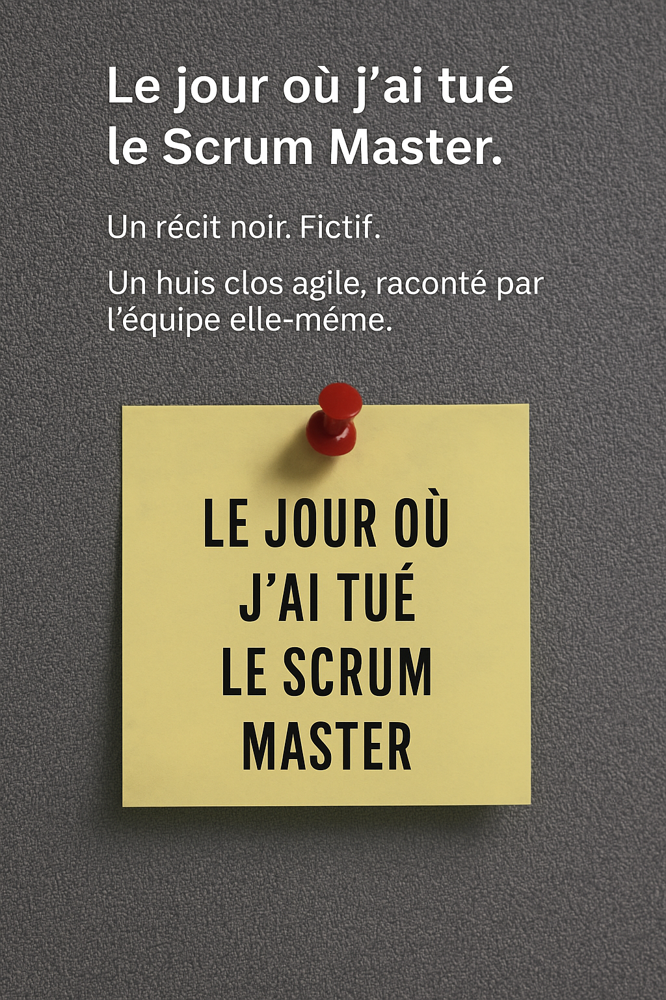
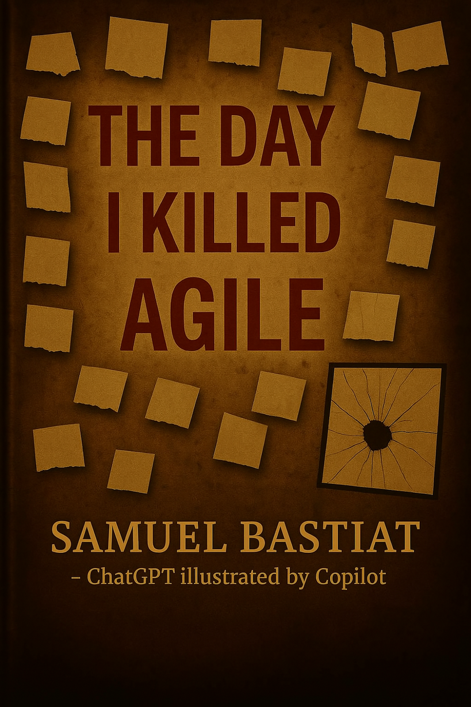
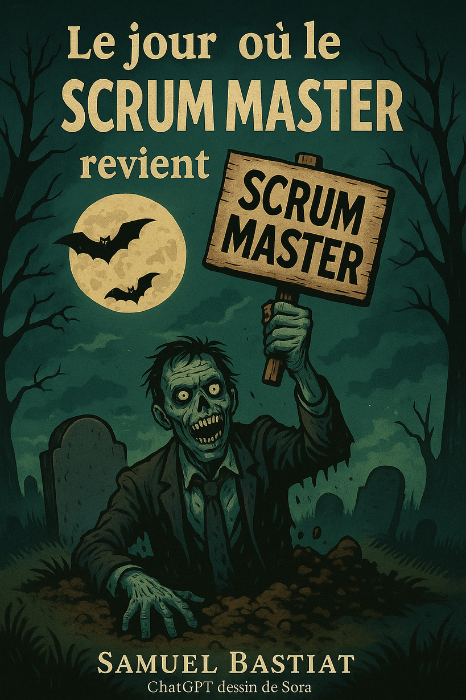

Liberating Structures Card Deck 📚 francophone
Une version francophone et améliorée du jeu de cartes Liberating Structures, pour faciliter la collaboration et l'animation d'ateliers.
Fonctionnalités principales
- Basé sur le dépôt originel d'Holisticon avec des scripts pour l'ajout de nouvelles langues
- Format imprimable en A4 avec instructions pour un rendu professionnel
Instructions d'impression
- Imprimer en couleur sur papier A4 (recto uniquement).
- Plier pour créer un recto-verso.
- Découper le long des pointillés et plastifier si besoin.
- Utiliser du papier de 160 g/m² pour un meilleur résultat.
Les cartes sont disponibles dans plusieurs langues et utilisables sous licence Creative Commons License 
Dépot originel liberating-structures-cards
🨠Icônes colorées des Liberating Structures
Un ensemble complet d'icônes illustrant chaque structure de manière visuelle et attrayante. Idéal pour :
- Créer des supports de présentation ou d'atelier
- Faciliter visuellement les échanges en équipe
- Renforcer la clarté et l'engagement des participants
Version en ligne pour choisir votre propre couleur : 🨠Personnalise la couleur de tes icônes LS

Les icônes sont disponibles dans plusieurs couleurs et utilisables sous licence Creative Commons License
Dépot originel liberating-structures-icons
📘 LLM-Assisted Software Design
Un langage de motifs pour concevoir avec l’IA
🧠Entretien audio sur le livre
Ce livre explore une nouvelle manière de concevoir les systèmes logiciels à l’ère des LLM (modèles de langage de grande taille).
Plutôt que de voir ces outils comme de simples assistants, LLM-Assisted Software Design propose de les considérer comme de véritables partenaires de dialogue, capables d’augmenter notre pensée, notre créativité et nos processus de conception.
Le cœur du livre est une grammaire de motifs d’interaction : des structures, des postures, des canevas qui permettent aux développeurs, PO, coachs agiles et architectes d’intégrer les LLM dans leurs pratiques quotidiennes, de manière structurée, éthique et efficace.
ğŸ› ï¸ 16 chapitres, des dizaines d’exemples, des fiches-outils, des canevas de prompt, une réflexion sur les rôles, la responsabilité, l’éthique et les futurs métiers de la conception augmentée.
💬 Pensé comme une conversation entre humains et IA — à continuer dans vos équipes.
➡️ Lire ou télécharger le livre (édition communautaire gratuite sur Leanpub)

📘 Le jour où j’ai tué le Scrum Master
🧠Entretien audio sur le livre - Une fable moderne sur les dérives du cadre et la passivité
Une fiction noire sur l’effacement d’un Scrum Master, racontée par son équipe. Huis clos agile, tensions, silence et complicité collective.
➡️ Lire ou télécharger le livre en format PDF et ePub
📘 Le jour où j’ai tué Agile
🧠Entretien audio sur le livre - Chronique d'une Désillusion Collective en Entreprise
Un récit choral poignant sur la mort silencieuse d’Agile, à travers les voix de ceux qui l’ont incarné… puis abandonné.
➡️ Lire ou télécharger le livre en format PDF et ePub

📘 The day I killed Agile
Chronicle of Collective Disillusionment in Business
A poignant choral narrative about the silent death of Agile, through the voices of those who embodied it... then abandoned it.
➡️ Read or download the book in PDF and ePub format

📘 Le jour où le Scrum Master revient d’outre-tombe
🧠Entretien audio sur le livre - Le Retour Silencieux du Scrum Master, quand la Présence Transforme l'Équipe
Le Scrum Master revient. Plus discret. Plus humain. Une fiction lucide sur l’équipe, le doute, et ce qui reste quand l’agilité cesse de faire semblant.
➡️ Lire ou télécharger le livre en format PDF et ePub